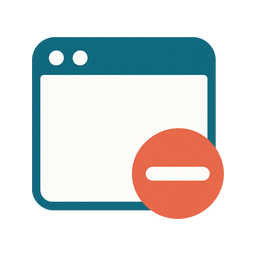

01Browser minus
A direct picture of removing unwanted content from a web page. The current icon.
Three ways to express quieter browsing. Compare the shape, then check the actual toolbar sizes below.

A direct picture of removing unwanted content from a web page. The current icon.
Emphasizes filtering the interruptions while keeping ordinary content.
Emphasizes protection from interruptions and unwanted autoplay.